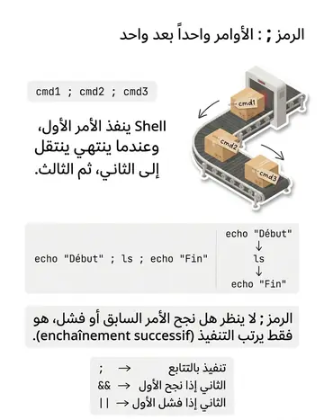
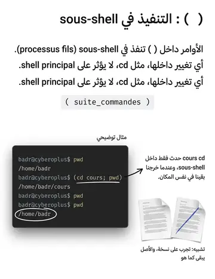
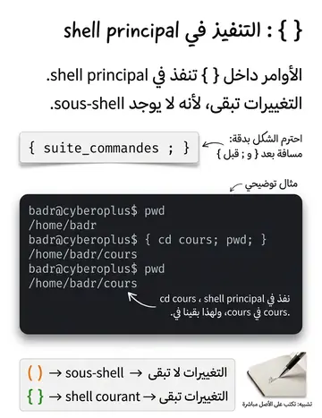

Composition des commandes (; & () {})
تركيب الأوامر (; & () {})
الشرح بالعربية
الفاصلة ; تعاقب الأوامر دائمًا، و& تشغّل في الخلفية. الأقواس () تنفّذ في sous-shell فرعي، لذلك تغييرات cd داخلها لا تبقى بعدها؛ أما {} فتنفّذ في نفس الـ shell وتبقى التأثيرات. هذا فرق امتحاني شهير. && و|| شرطيتان حسب كود الخروج $? (0 = نجاح).
Illustrations de la leçon
3 planches · cliquez pour agrandir


Contenu de la leçon
Le cours en français, avec les termes techniques et les exemples.
Symbole « ; »
Le symbole « ; » permet de lancer plusieurs commandes sur une même ligne en les séparant les unes des autres. Cela crée une séquence de commandes exécutées dans l’ordre spécifié.
Chaque commande est exécutée successivement, le shell attendant la fin de cmd1 avant de passer à cmd2.
cmd1 ; cmd2 ; ...
Exemple :
echo "Début" ; ls ; echo "Fin"
COMPOSITION DES COMMANDES
Symbole « & » pour l’exécution en arrière-plan:
Le symbole « & » est utilisé pour exécuter des commandes en arrière-plan, permettant au terminal de rester disponible pour d'autres opérations. Cela est particulièrement utile pour les commandes ou scripts de longue durée, car le shell ne reste pas bloqué en attendant leur achèvement.
Lorsqu’une commande est suivie du symbole « & », le shell lance la commande en tâche de fond et revient immédiatement au prompt pour permettre d'autres entrées.
nom_cmd &
Avantages de l'exécution en arrière-plan
Permet de libérer le terminal pour d'autres commandes sans attendre la fin de la tâche.
Utile pour des opérations lourdes, telles que les sauvegardes, téléchargements, ou scripts de traitement de données.
COMPOSITION DES COMMANDES
COMPOSITION DES COMMANDES
Les séquences de commandes () et {}
Les symboles () et {} permettent de regrouper plusieurs commandes pour créer une macrocommande. Cette combinaison est pratique pour structurer et organiser des séquences de commandes complexes.
( suite_cmds ) : Utilisation des parenthèses
Les commandes placées entre parenthèses sont exécutées dans un sous-shell (processus fils).
Cela signifie que les modifications faites dans ce bloc (comme les changements de variables ou de répertoires) n'affectent pas le shell principal.
{ suite_cmds ; } : Utilisation des accolades
Les commandes entre accolades sont exécutées par le shell principal (pas de sous-shell).
Les modifications apportées dans ce bloc sont donc visibles dans le shell principal.
Exemple : Utilisation d'une macro-commande avec () pour le sous-shell
Considérons la macro-commande (cd cours; pwd) :
% pwd/home/etudiant
% (cd cours; pwd)/home/etudiant/cours
% pwd/home/etudiant
Les commandes cd cours et pwd, placées entre parenthèses, sont exécutées dans un sous-shell.
Une fois le sous-shell terminé, le shell courant reste inchangé, d’où le retour au répertoire initial
/home/etudiant.
Cela montre l’avantage des parenthèses pour exécuter des séquences de commandes sans impacter le contexte du shell principal.
COMPOSITION DES COMMANDES
Exemple : Utilisation d'une macro-commande avec {} dans le shell principal
Considérons la macro-commande { cd cours; pwd; } :
% pwd/home/etudiant
% { cd cours; pwd; }/home/etudiant/cours
% pwd/home/etudiant/cours
Les commandes entre accolades { cd cours; pwd; } sont exécutées dans le shell principal et non dans un sousshell.
Commande pwd en dehors des accolades : Confirme que le répertoire est toujours /home/etudiant/cours, car le changement de répertoire fait partie du shell principal.
Cet exemple montre que l’utilisation des accolades {} est idéale lorsque l’on souhaite que les changements apportés par les commandes regroupées soient conservés dans le shell courant.